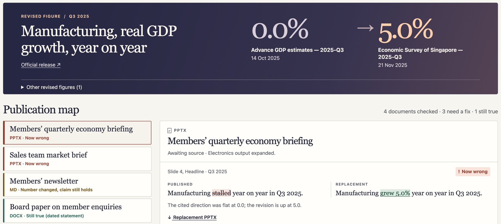

<!-- 4 · How it works, by roles. Four stations along one red recall thread that draws itself left to right; each
     station's signal lamp lights as the thread reaches it, and the press mark rides the thread from the slide to the
     corrected deck. Keyword chips only. -->
<section class="slide" id="s4">
  <h2 data-enter>QwenWork reads, checks nightly and hands back the fix.</h2>
  <svg class="line" viewBox="0 0 1920 1080" aria-hidden="true">
    <path class="draw" style="--t:.1;--d:1.05s" d="M230 502 H1690"/>
  </svg>
  <i class="rider" aria-hidden="true"><span class="pm"><i></i><i></i><i></i></span></i>
  <div class="stations">
    <div class="st card pop" style="--t:.12;--o:50% 0">
      <b>Skill</b>
      <pre class="code-tile">name: recall-press
reads .pptx .docx .md</pre>
    </div>
    <div class="st card pop" style="--t:.42;--o:50% 0">
      <b>Nightly task</b>
      <div class="night-artifact"><div class="rp-housing"><div class="rp-row clock"></div></div><span class="caption">every night · SGT</span></div>
    </div>
    <div class="st card pop" style="--t:.72;--o:50% 0">
      <b>Agent</b>
      <div class="verdict"><p>Manufacturing <span class="strike">stalled</span></p><span class="pill">Now wrong</span></div>
    </div>
    <div class="st card pop hot" style="--t:1.02;--o:50% 0">
      <b>Page</b>
      <div class="browser"></div>
    </div>
  </div>
  <aside class="notes"><b>Say</b>QwenWork does the reading, the nightly check and the delivery. A Skill reads each slide and links every claim to a series, a quarter and a dated source. A nightly task checks the official data. The agent judges each sentence (now wrong, number changed, or a dated statement that still holds) and gives a reason. Then it hands back the page: the map and the corrected deck. The editor decides: apply, skip or edit first.<b>Do</b>Keep it to the four nouns. If asked: this is the designed QwenWork flow; the founder's desktop checks (Skill picker, fresh task, two timed runs) are on the test card, and the local replay proves the engine underneath.</aside>
</section>

<style>
#s4{--field:var(--f4)}
#s4 .line{position:absolute;inset:0;width:1920px;height:1080px;pointer-events:none}
#s4 .line path{fill:none;stroke:var(--thread);stroke-width:6;stroke-linecap:round;filter:drop-shadow(0 6px 8px rgba(10,10,30,.3))}
#s4 .stations{position:absolute;left:var(--pad-x);right:var(--pad-x);top:470px;display:grid;grid-template-columns:repeat(4,1fr);gap:44px}
#s4 .st{display:flex;flex-direction:column;align-items:flex-start;gap:24px;padding:54px 24px 32px;height:324px;border-radius:22px}
#s4 .st>b{font:800 58px/1 var(--serif);letter-spacing:-.02em;color:var(--ink)}
#s4 .code-tile{margin:0;width:100%;padding:22px 12px;border-radius:20px;white-space:pre;font:500 26px/1.5 monospace;color:#F3ECDC;background:linear-gradient(180deg,#2A2B30,#141518)}
#s4 .night-artifact{width:100%}
#s4 .clock{--cw:52px;--ch:74px}
#s4 .caption{display:block;margin-top:18px;font:500 26px/1.2 var(--f);color:var(--ink-2)}
#s4 .verdict{width:100%;padding:20px 18px;background:var(--paper-2);border-radius:8px}
#s4 .verdict p{margin:0 0 18px;font:600 28px/1.3 var(--serif);color:var(--ink);white-space:nowrap}
#s4 .verdict .strike{color:var(--thread)}
#s4 .pill{display:inline-block;padding:8px 14px;border-radius:30px;background:var(--thread);color:var(--paper);font:700 22px/1 var(--f)}
#s4 .browser{width:100%;height:150px;border-radius:12px}
#s4 .browser>img{height:106px;object-fit:cover;object-position:top}
#s4 .rider{position:absolute;left:1690px;top:502px;width:58px;height:58px;margin:-29px 0 0 -29px;border-radius:50%;display:grid;place-items:center;z-index:3;
  background:var(--navy);box-shadow:0 0 0 4px var(--thread),0 10px 18px -6px rgba(10,8,30,.6);color:#F3ECDC;font-size:30px;opacity:0}
#s4 .rider .pm{display:inline-grid;width:.72em;height:.82em;align-content:center;gap:.105em;transform:skewY(-15deg)}
#s4 .rider .pm i{display:block;height:.14em;background:currentColor}
#s4 .rider .pm i:last-child{width:64%;background:var(--accent)}
#s4.play .rider{animation:s4-ride 1.15s cubic-bezier(.45,0,.4,1) .1s both}
@keyframes s4-ride{0%{opacity:0;transform:translateX(-1460px)}8%{opacity:1}88%{opacity:1}100%{opacity:0;transform:none}}
</style>

<script>
RP.flaps(document.querySelector('#s4 .clock'), 5, { text: '09:00' })
</script>
